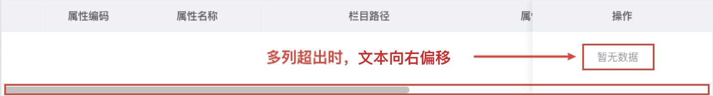

ElementUI的Table组件在无数据情况下让“暂无数据”文本居中显示Feb 23, 2023问题当显示多列字段时，底部会出现滚动条。“暂无数据”文本根据列平铺的总宽度进行居中，导致无数据时“暂无数据”文本向右偏移。  修改样式123456::v-deep .el-table__empty-block { width: 100%; min-width: 100%; max-width: 100%; padding-right: 100%;}